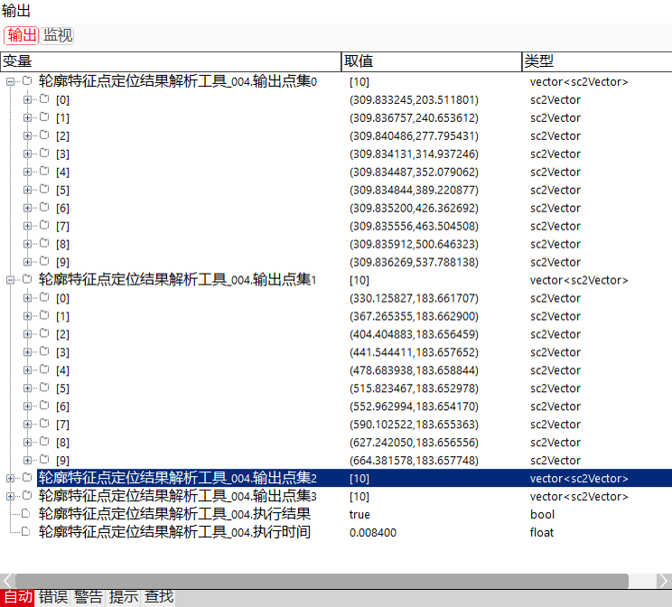

获取轮廓特征点定位工具的特征点，最多支持4组轮廓数据。

| 分类 | 参数名称 | 参数描述 |
|---|---|---|
| 属性窗口 | 无 | 无 |
| 图像窗口 | 无 | 无 |
| 数据链 | 轮廓特征点定位结果 | 需要传入的轮廓特征点定位结果，此工具是和轮廓特征点定位工具一起使用，提取1至4组轮廓输出。 |
| 高级界面 | 无 | 无 |
| 分类 | 参数名称 | 参数描述 |
|---|---|---|
| 监视窗口 | 输出点集 | 输出轮廓特征点定位结果，有几组输出几组，最多4组。 |
| 执行结果 | 工具执行结果。 | |
| 执行时间 | 工具执行时间。 | |
| 图像窗口 | 无 | 无 |
| 数据链 | 输出点集 | 输出轮廓特征点定位结果，有几组输出几组，最多4组。 |
无
无
参见“\Samples\轮廓特征点定位工具.gvp”。